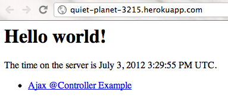
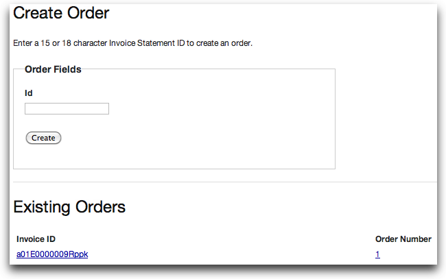
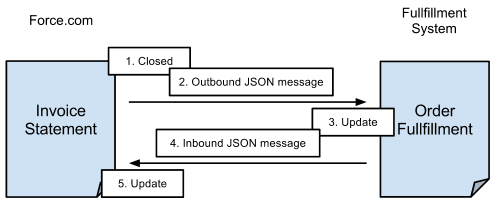
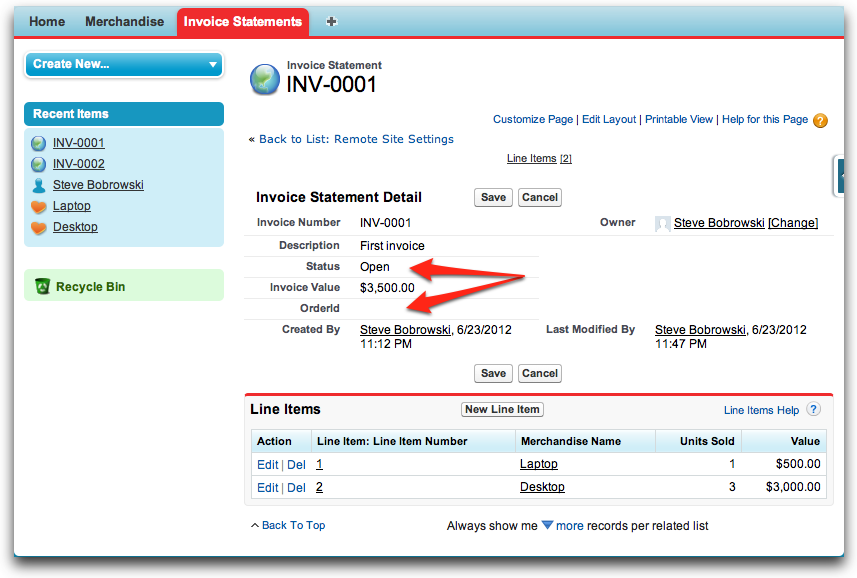
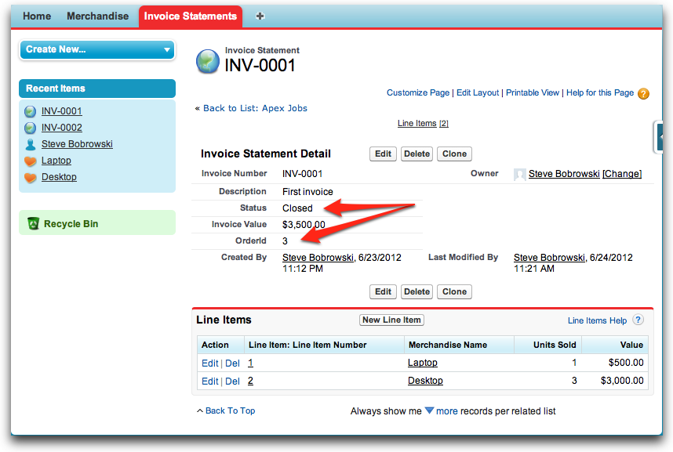
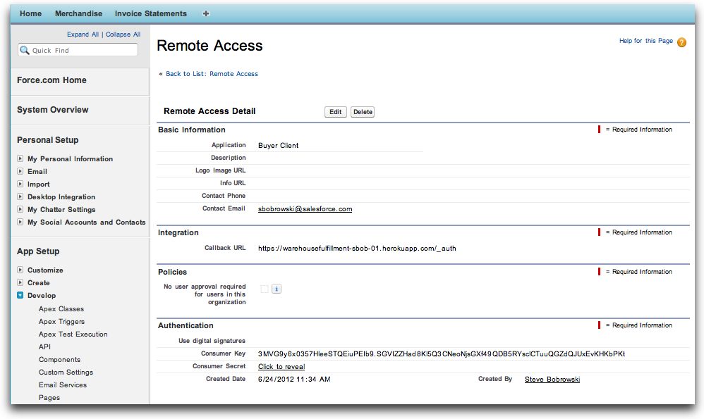
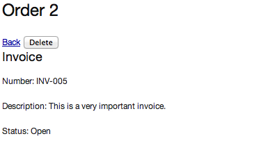

Integrating Force.com with External Systems
Part I: Create a Heroku Application
Step 1: Clone the Github Project
Step 2: Create a Heroku Project
Part II: Create an Apex Trigger for Integration
Step 1: Create an External ID Field on Invoice Statement
Step 2: Create a Remote Site Record
Step 3: Create an Integration Apex Class
Step 4: Test the @future Method
Step 5: Create a Trigger to Call the @future Method
Part III: Update the Heroku App
Step 1: Configure Remote Access
Step 2: Update your application with a new branch
Sign up for a free Force.com Developer Edition (DE) organization (org):
http://www.developerforce.com/events/regular/registration.php
Sign up for a free Heroku account:
Download and install the Heroku Toolbelt:
This tutorial assumes you have created the Warehouse data model. If you have not, you can install it from this link:
https://login.salesforce.com/packaging/installPackage.apexp?p0=04tE0000000Pzdj
Integrating Force.com with legacy environments is a common use case. Many legacy apps are Java apps, running inside a company’s firewall, and still serve useful purposes. The following three tutorials teach you how to first build Java app on Heroku that serves as the integration target.
Heroku provides a powerful Platform as a Service for deploying applications in a multitude of languages, including Java. In this tutorial, you create a web application using the Java Spring MVC framework to mimic handling fulfillment requests from our Warehouse application.
Familiarity with Java is helpful, but not required for this exercise. The tutorial starts with an application template to get you up and running. You then walk through the steps to securely integrate the application with the Force.com platform.
Git is a distributed source control system with an emphasis on speed and ease of use. Heroku integrates directly into git, allowing for continuous deployment of your application by pushing changes into a repository on Heroku. Github is a web-based hosting service for git repositories.
You’ll start with a pre-existing Spring MVC-based application stored on GitHub, and then as you make changes you will deploy them into your Heroku account and see your updates available online via Heroku’s cloud framework.
cd development
git clone https://github.com/developerforce/spring-mvc-fulfillment-base
Git then downloads the existing project into a new folder, spring-mvc-fulfillment-base.
Now that you have the project locally, you need a place to deploy it that is accessible on the Web. In this tutorial, you deploy the app to Heroku.
cd spring-mvc-fullfillment
heroku login
heroku create
Heroku then creates a local git repository, as well as a new repository on its hosting framework where you can push applications, and adds the definition for that remote deployment for your local git repository to understand. This makes it easy to leverage git for source control, make local edits and then deploy your application to the Heroku cloud.
All application names on Heroku must be unique, so you are going to get a randomly generated application name, such as:
Creating quiet-planet-3215... done
The output above shows that the new application name is quiet-planet-3215. You may want to copy and paste that into a text file, or otherwise make note of it. Throughout this tutorial, there are references to the application name as {appname}. So if your gven application name is quiet-planet-3215, when a step prompts you to enter a URL with the format https://{appname}.herokuapp.com/_auth, you would use:
https://quiet-planet-3215.herokuapp.com/_auth
git push heroku master
heroku open
Or by opening https://{appname}.herokuapp.com in a browser.
You now have a new Heroku application in the cloud. The first page should look like this:

Look carefully as the git push happens and you’ll see some magic. Early on, Heroku detects that the push is a Spring MVC app, so it installs Maven, builds the app, and then gets it running for you, all with just a single command.
This step shows you how to take your application for a quick test run to prove it is functioning.

Heroku’s polyglot Platform as a Service design lets you easily deploy your applications with industry-standard tools, such as git. Normally, teams would be using a development environment like Eclipse, and in fact Heroku has released an Eclipse plugin for tighter integration with their platform. You can also interact with Heroku on the command line and directly get access to logs and performance tools for your applications.
Force.com can integrate with external systems using many different approaches. For example, without writing any code, you can declare workflow rules that send outbound email alerts and make simple Web service calls. To implement more complex scenarios, you might do it programmatically with Apex code.
This tutorial teaches you how create a Web service callout to integrate the Warehouse app with the fulfillment system you deployed in Part I. This fulfillment system, written in Java, is hosted on Heroku, but it could be any application with a Web service interface.
The following screen illustrates the example scenario requirements: When an invoice statement's status changes to Closed in your Force.com system, the system should send a JSON-formatted message to the order fulfillment service running on Heroku, which in turn returns an order ID to the Force.com system that then records this in the Invoice. Time to get started.

To start, create a custom field in the Invoice Statement custom object that can store the order ID returned by the Java app running on Heroku. The field is an index into an external system, so it makes sense to make it an External ID.
The Force.com platform implements very conservative security controls. By default, Force.com prohibits callouts to external sites. Therefore, this lesson teaches you how to register the Heroku Java site in the Remote Site Settings page.
Note: Just for fun, you can skip this section and create and test the callout in steps 3 and 4 below to observe the error message that is generated when an app attempts to callout to a URL without permission. Don't forget to come back and add the remote site record, though!
Now, any Apex code in your app can call the fulfillment Web service.
Now that your app can access an external URL, it's time to implement the callout. Force.com doesn’t allow Apex triggers to make synchronous web service calls directly -- this restriction on trigger logic makes sense: without it, a long-running Web service might hold a record lock and reduce concurrency for your app.
This steps in this tutorial teach you how to build out the correct approach, which is to create an Apex class with an asynchronous method that uses the @future annotation, and then build a trigger to call the method as necessary. When the trigger calls the asynchronous method, Force.com queues the call, execution of the trigger completes, and releases any record locks. Eventually, when the method call reaches the top of the queue, Force.com executes the method and posts the invoice to the order fulfillment Web service running on Heroku.
To create the Integration class with the postOrder method:
public class Integration {
// The ExternalOrder class holds a string and integer
// received from the external fulfillment system.
public class ExternalOrder {
public String id {get; set;}
public Integer order_number {get; set;}
}
// The postOrder method integrates the local Force.com invoicing system
// with a remote fulfillment system; specifically, by posting data about
// closed orders to the remote system. Functionally, the method 1) prepares
// JSON-formatted data to send to the remote service, 2) makes an HTTP call
// to send the prepared data to the remote service, and then 3) processes
// any JSON-formatted data returned by the remote service to update the
// local Invoices with the corresponding external Ids in the remote system.
@future (callout=true) // indicates that this is an asynchronous call
public static void postOrder(List<Id> invoiceIds) {
// 1) see above
// Create a JSON generator object
JSONGenerator gen = JSON.createGenerator(true);
// open the JSON generator
gen.writeStartArray();
// interate through the list of invoices passed in to the call
// writing each invoice Id to the array
for (Id invoiceId : invoiceIds) {
gen.writeStartObject();
gen.writeStringField('id', invoiceId);
gen.writeEndObject();
}
// close the JSON generator
gen.writeEndArray();
// create a string from the JSON generator
String jsonOrders = gen.getAsString();
// debugging call, which you can check in console logs
System.debug('jsonOrders: ' + jsonOrders);
// 2) see above
// create an HTTPrequest object
HttpRequest req = new HttpRequest();
// set up the HTTP request with a method, endpoint, header, and body
req.setMethod('POST');
// DON'T FORGET TO UPDATE THE FOLLOWING LINE WITH YOUR appid
req.setEndpoint('https://{appname}.herokuapp.com/order');
req.setHeader('Content-Type', 'application/json');
req.setBody(jsonOrders);
// create a new HTTP object
Http http = new Http();
// create a new HTTP response for receiving the remote response
// then use it to send the configured HTTPrequest
HTTPResponse res = http.send(req);
// debugging call, which you can check in console logs
System.debug('Fulfillment service returned '+ res.getBody());
// 3) see above
// Examine the status code from the HTTPResponse
// If status code != 200, write debugging information, done
if (res.getStatusCode() != 200) {
System.debug('Error from ' + req.getEndpoint() + ' : ' +
res.getStatusCode() + ' ' + res.getStatus());
}
// If status code = 200, update each Invoice Statement
// with the external ID returned by the fulfillment service.
else {
// Retrieve all of the Invoice Statement sObjects
// originally passed into the method call to prep for update.
List<Invoice_Statement__c> invoices =
[SELECT Id FROM Invoice_Statement__c WHERE Id IN :invoiceIds];
// Create a list of external orders by deserializing the
// JSON data returned by the fulfillment service.
List<ExternalOrder> orders =
(List<ExternalOrder>)JSON.deserialize(res.getBody(),
List<ExternalOrder>.class);
// Create a map of Invoice Statement Ids from the retrieved
// invoices list.
Map<Id, Invoice_Statement__c> invoiceMap =
new Map<Id, Invoice_Statement__c>(invoices);
// Update the order numbers in the invoices
for ( ExternalOrder order : orders ) {
Invoice_Statement__c invoice = invoiceMap.get(order.id);
invoice.OrderId__c = String.valueOf(order.order_number);
}
// Update all invoices in the database with a bulk update
update invoices;
}
}
}
Don’t miss replacing the {appname} with yours.
See the embedded comments for more information about the code example.
Note: This class method demonstrates an important best practice to always consider when developing with Force.com: bulk processing.
Before creating a trigger that calls an @future method, it’s best practice to interactively test the method by itself and validate that the remote site configuration. To test the method interactively, you can use the Developer Console.
// Get an Invoice_Statement__c for testing
Invoice_Statement__c invoice = [SELECT ID FROM Invoice_Statement__c LIMIT 1];
// Call the postOrder method to test the asynchronous call
Integration.postOrder(new List<Id>{invoice.id});
08:08:42:962 USER_DEBUG [58]|DEBUG|Fulfillment service returned [{"order_number":2,"id":"a01E0000009RpppIAC"}]
Now that you have a functional @future method that can call the fulfillment Web service, it's time to tie things together with a trigger.
To create a trigger on the Invoice Statement object that calls the Integration.postOrder method, complete the following steps:
trigger HandleOrderUpdate on Invoice_Statement__c (after update) {
// Create a map of IDs to all of the *old* versions of sObjects
// updated by the call that fires the trigger.
Map<ID, Invoice_Statement__c> oldMap =
new Map<ID, Invoice_Statement__c>(Trigger.old);
// Create an empty list of Ids
List<Id> invoiceIds = new List<Id>();
// Interate through all of the *new* versions of Invoice_Statement
// sObjects updated by the call that fires the trigger, adding
// corresponding Ids to the invoiceIds List, but *only* when an
// sObject's status changed from a non-"Closed" value to "Closed".
for (Invoice_Statement__c invoice: Trigger.new) {
if (invoice.status__c == 'Closed' &&
oldMap.get(invoice.Id).status__c != 'Closed') {
invoiceIds.add(invoice.Id);
}
}
// If the list of Ids is not empty, call Integration.postOrder,
// supplying the list of Ids for fulfillment.
if (invoiceIds.size() > 0) {
Integration.postOrder(invoiceIds);
}
}
The comments in the code explain what is happening. In particular, understand that Force.com triggers must be able to handle both single row and bulk updates because of the varying types of calls that can fire them (single row or bulk update calls). The trigger creates a list of IDs of invoices that have been closed in this update, and then calls the @future method once, passing the list of IDs.
With the trigger in place, test the integration by firing the trigger.
Before:

After:

Congratulations! Your app is sending invoices for fulfillment. You have successfully created an asynchronous Apex class that posted invoice details to another app hosted elsewhere, in this case on Heroku. Of course, your external application could reside anywhere as long as you can access it with a Web services call. Your class uses open standards technology, including JSON and REST to transmit data, and a trigger on Invoice Statements to execute the process.
You now have two sides of an integration in place: one running a Java endpoint on Heroku, and another in Force.com that communicates with the endpoint when the appropriate changes take place. Now that you’ve got the connection in place, update the Heroku application to retrieve the pertinent information it is dealing with and display it to the user.
Before an application can use OAuth 2.0 with Force.com, you have to configure your environment. Log in to your Force.com organization as an administrator and configure a remote access application:
https://{appname}.herokuapp.com/_auth
The resulting page should look similar to this:

While you were creating a new Apex trigger on your Force.com instance, developers have added new functionality to the original project and placed into a specific branch on github. Git allows for easy branching and merging of code for your projects. Using this branch, you will be able to test out the new features - specifically the ability for your Heroku application to access your Force.com records directly. It’s easy to add this branch, called full on the main project, to your codebase:
git pull origin full
heroku config:add OAUTH_CLIENT_KEY=PUBLICKEY OAUTH_CLIENT_SECRET=PRIVATEKEY
Replacing PUBLICKEY with the Consumer Key from your Remote Access record, and PRIVATEKEY with the Consumer Secret. It may be helpful to do this in a text editor before putting it on the command line.
git push heroku master
Once the new version of the app is up, refresh your browser to see it. The biggest difference is the addition of an OAuth flow. This logic lets the application get a user’s permission to have session information without requiring the third-party server to handle the user’s credentials. With this added to the project, the fulfillment application can use the Force.com REST API to access information directly from the user’s instance.
You can review all of the changes brought in by this branch on github:
https://github.com/developerforce/spring-mvc-fulfillment-base/compare/master...full
If you inspect the changes in the new files, you will notice that they use the Force.com REST API to manipulate Invoice Statement records in Force.com. Look at InvoiceServiceImpl.java in particular to see how it creates, queries, retrieves and deletes invoices. This tutorial only uses the findOrder() method; the others are included for your reference.
You have added brand new functionality by merging a branch into your local code, but there’s a feature still missing - the application now understands how to use OAuth and how access data from the Force.com platfrom, but the web page hasn’t been updated to display the Invoice Statement fields.
<a href="javascript:history.back()">Back</a> <input id="delete" type="submit" value="Delete" />
add:
<h3>Invoice</h3>
<p>Number: <c:out value="${invoice.number}"/></p>
<p>Description: <c:out value="${invoice.description}"/></p>
<p>Status: <c:out value="${invoice.status}"/></p>
git commit -am "Updating UI”
git push heroku master
Once the new version of the app is deployed, refresh your browser to see it. Notice that, given an Id, this code retrieves the corresponding invoice record. Because there might be mock Id's in the database that are not in Force.com, the app handles the corresponding exception by showing default data. Adding the invoice to the model makes it available to the view below.
Now when you test the fulfillment application, it will show the invoice information currently in your Force.com instance by grabbing the information via the REST API using the record ID:

To really see the application in motion, you can edit information on Force.com (like the Description of the Invoice Statement) and see it represented the next time you load that order on Heroku.
Notice that the web service call from Force.com to create orders is not secured. Securing this call goes beyond the scope of this workbook, but a simple solution would be to set up a shared secret between the Force.com app and the fulfillment app. The Force.com app would create an HMAC of the parameters in the request, using the secret, and the fulfillment app would verify the HMAC.
With a combination of OAuth authentication, the REST API, Apex Triggers, future callouts and the polyglot framework of the Heroku platform, you have created and deployed a bi-directional integration between two clouds.